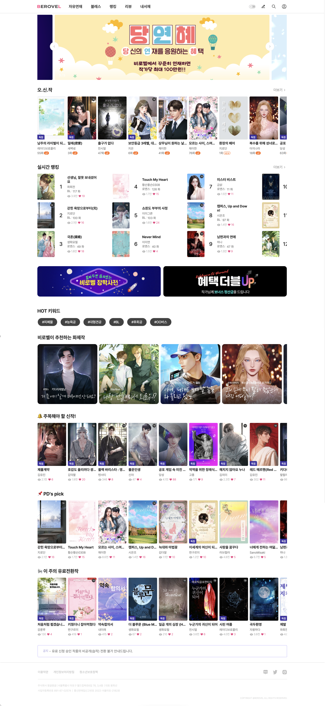
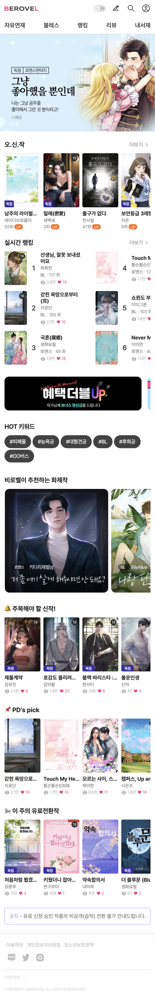

비로벨

웹소설 플랫폼 사이트 구축
웹소설 콘텐츠를 탐색하고 감상하는 일반 사용자 영역과,
작품 등록 및 정산 관리를 수행하는 작가 영역으로 구성된 웹소설 플랫폼 프로젝트입니다.
Vue.js와 Nuxt.js를 기반으로 메인, 작품 리스트, 작품 상세, 작품 읽기, 마이페이지 등 공통 페이지를 구현했으며,
작가 전용 작품 등록 및 관리 화면까지 포함하여 사용자 유형에 따른 UI 구조를 설계했습니다.
< 몽글몽글 작업 >
- 작업기간 2022.08 ~ 2023.01
- 기술스택 HTML5,CSS3,SCSS,JavaScript,vue.js,nuxt.js
- 협업툴 git
site preview
서비스 소개
웹소설 콘텐츠를 탐색하는 사용자와
작품을 등록·관리하는 작가로 구성된 플랫폼 서비스입니다.
서비스 구조
사용자 영역(메인, 리스트, 상세, 읽기)과 작가 영역(작품 등록, 관리, 정산)을 분리하여
각 역할에 맞는 화면 흐름을 설계했습니다.
Interactive Elements
메인 페이지

-
swiper.js 을 화면에 슬라이드 배너를 노출시켰으며,
배너이동이 가능하도록 button 커스텀과
indicator를 통해 배너의 개수와 위치를 표시해두었습니다.

-
dragscroll.js 사용하여 화면 영역을 넘어가는 리스트를
드래그 스크롤 하여 확인할 수 있도록 작업하였습니다.
작품소개 페이지

-
image popup 작품 표지를 클릭하면 image popup 뜨도록하여 큰 이미지로 확인할 수 있도록 하였습니다.
메뉴와 컨텐츠의 인덱스 순서가 동일한 경우 컨텐츠 내용을 보여주었고
아이템을 선택함과 동시에 캐릭터에 아이템을 장착하는 효과를 보여줄 수 있도록 코드 작성하였습니다. -
button effect button을 클릭하면 '더보기/접기' 기능이 활성화되어 작품소개란의 부분을 통해 화면의 사용성을 높였습니다.
작품읽기 페이지


-
head,bottom effect 작품읽기 창에서 스크롤,커서 클릭시 head,bottom 활성화/비활성화상태가 되어
작품 읽기의 편의성을 제공했습니다. -
setting popup 톱니바퀴 모양 아이콘을 클릭했을 때 팝업 창이 활성화되며
글꼴의 종류,크기,줄간격,배경색을 변경할 수 있습니다.
작품리스트 페이지

-
반응형 체크 작품 리스트의 이미지의 레이아웃이 깨지지 않도록
미디어쿼리를 활용하여 비율에 맞게 반응형으로 떨어지도록 작업했습니다.
site preview
-

-
